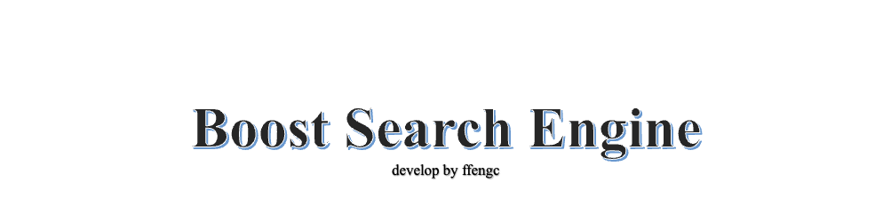
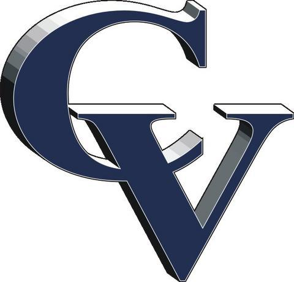

Results found: 0
 Project abstract:
This project is a search engine implementation based on the Boost library, aiming to provide an
efficient and accurate search system specifically for searching Boost documents. By elaborating on
the search engine building process, from data preprocessing to index creation, to search query
processing and result presentation, this project shows how to build a complete search engine system.
The technology stack covers C++, Boost library, Html, CSS and JavaScript, realizing back-end index
construction and front-end user interaction. The basic functions of the project are comprehensive,
and advanced features such as word frequency statistics, dynamically updated indexes, and search
result priority sorting have been added, which significantly improves search efficiency and
accuracy. This makes the search engine particularly suitable for developers to quickly find the
technical documents they need when using Boost libraries, greatly improving development efficiency
and document accessibility.
 GitHub:
https://github.com/ffengc
GitHub:
https://github.com/ffengc